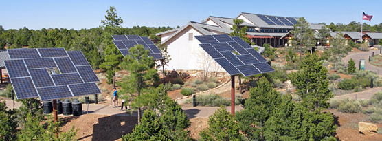
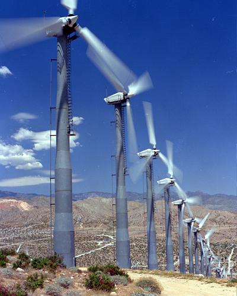
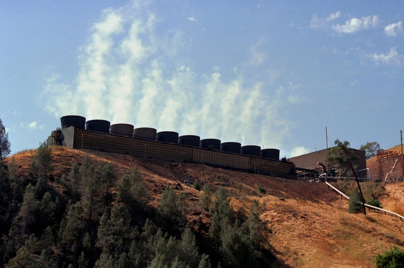

One of the reasons why solar energy is one of the first things you think of when you hear 'Clean Energy' is because it is so common. Solar panels are efficient and can be placed anywhere. Solar panels can be placed anywhere, on top of buildings, in large scale farms, or even in your front lawn.
Solar energy can be captured in a number of ways. One of which, and the most common, is by the use of a photovoltaic solar array. Photovoltaic differs from other types of solar power by converting the light from the sun directly into energy. Other system, though less common, will use the light from the sun to heat liquids more along the lines of some geothermal energy methods.
There are two main types of wind turbines. One of which is the horizontal-axis design that looks much like traditional windmills. There is also the vertical-axis design or the Darrieus model. A turbine is typically composed of two or more blades which, when pushed by the wind, spin a rotational shaft, producing mechanical energy. The drive train is that area containing the gearbox and generator, typically located in the box on the top of the tower. The tower is the large structure that supports the blades and provide sufficient altitude. The tower will also house the electrical cables, control equipment, and interconnection equipment. Other such equipment should include an anemometer, monitoring wind speed, a brake, in the event that the wind is too strong, and a yaw motor, controlling the yaw or side to side direction of the rotors.
It is suggested that wind turbines, when placed in an array, should be spread out with a width of about four times the length of a single rotor apart from each tower, and spread out in the direction perpendicular to the prevailing wind of about ten times the length of a single rotor apart from each tower. The location of your wind farm geographically is also important as you rely on high winds for efficient energy output. Some of the most efficient wind farms in America are typically found on coastal regions, mountain sides, and low lying plains, but of those, the most efficient wind farms are in Alaska, along the Aleutian islands.
There are a multitude of ways of harvesting geothermal energy such as using dry steam. Dry steam is a process by that of which underground collections of steam are piped from wells to a turbine. Another method would be using flash steam. Flash steam differs from dry steam as it uses water from reservoirs with temperatures that reach up to 182°C or 360°F that is pumped to the surface. The water, after reaching the surface, is allowed to boil into steam allowing the steam to power turbines as is such with the dry steam method. Any leftover water is pumped back into the reservoir. A binary steam system also uses water, but it can be used at a much lower temperature. Binary steam uses the energy from water to heat another liquid such as Isobutene which has a lower boiling point that water. The secondary liquid, also known as the working fluid, is heated into steam that powers a turbine. The original water can then be pumped back into the ground to be reheated.
Opposed to simply creating electricity, you can also use geothermal heat pumps to manage the temperature of the surface. Despite the fact that the surface temperature changes seasonally, below the surface, the temperature is fairly consistent around 50°F - 60°F year round. One method is using a closed loop system of which there are three different types. One such type is a vertical system where water is pumped in a circulatory system downwards into the ground to be warmed, and then brought back up to be exchanged with colder water. Another system is a horizontal system where water is pumped into the ground, but is then coiled to maximize the energy gathered. This is more useful is you are unable to pipe water to such depths as the vertical system would require. The other closed loop system is the pond or lake system. In this system, water is pumped into a large heated body of water, however it is still contained within the pipes of the circular system. The open loop system however differs from the pond or lake closed loop system as it pumps water directly into the water and exchanges it for other water that is pumped from that same body.
Harvesting the geothermal energy necessary to power you home would be difficult as you would have to be on a location that has access to geothermal energy. Typically these would be near tectonically active regions as they require the generation of high temperature resources. However the geothermal heat pumps are available practically everywhere as the underground temperature stays the same through seasons and only changes with location and depth.